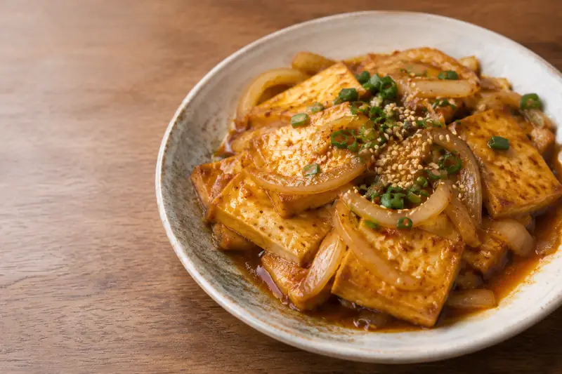
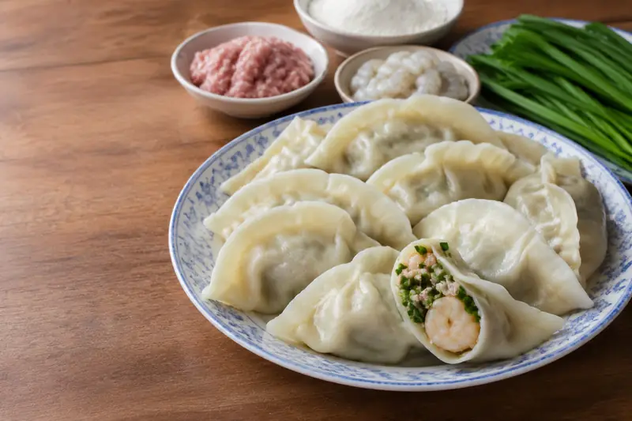
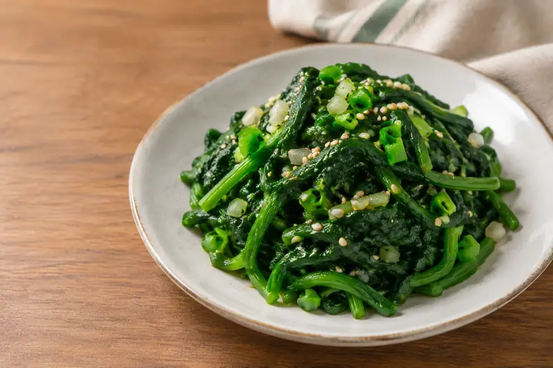
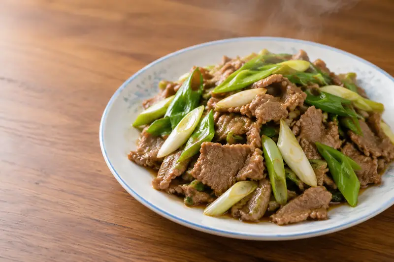
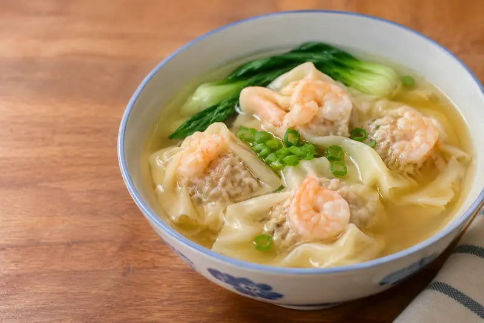
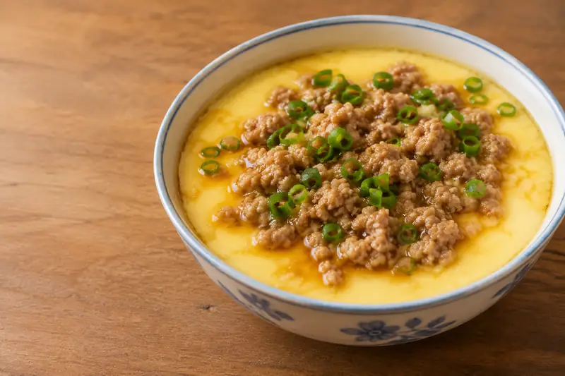
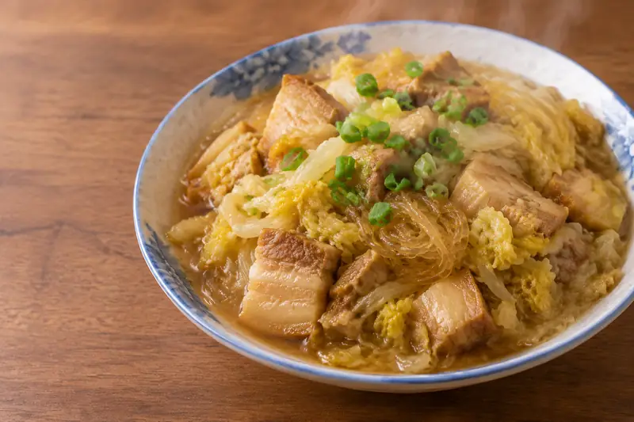

Pantry调味与干货
Sesame oil香油(芝麻油)
seen on costco.ca or in the Surrey warehouse listingCostco 目录/仓库可见
At Costco在 Costco
Typical pack常见规格: Kibon sesame oil, 1.65 LKibon 芝麻油，1.65 升
Price seen价格: C$21.99–21.99 (2026-11-16, costco.ca online listings; warehouse prices differcostco.ca 线上目录价，仓库价不同; varies随时变化)
Sample date取样日期 2026-11-16. Availability varies by warehouse and season; this is not a stock guarantee.有无因门店和季节而异，不是库存保证。
Store and portion储存与分装
Store in a cool, dark place; refrigerate opened sauces as the label says; keep oils sealed and away from light.常温避光放；开封后的酱料冷藏（看瓶身标示）；油类避光密封。
Decant a small bottle for daily use and keep the rest sealed.大瓶买回后倒出小瓶常用，其余收好，减少开封次数。
Per 100 g (Canadian Nutrient File)每 100 克（加拿大营养素数据库）
Vegetable oil, sesame · code 424
885 kcal · protein蛋白 0 g · fat脂肪 100 g · carbs碳水 0 g · fibre纤维 0 g · sodium钠 0 mg
Sesame芝麻
Recipes with this用到它的菜
 Beef Chow Fun干炒牛河23 min分钟 · 2 servings份 · Cantonese粤Bibimbap石锅拌饭50 min分钟 · 2 servings份 · Korean韩Braised Tofu with Mushrooms香菇烧豆腐25 min分钟 · 2 servings份 · Chinese home-style家常
Beef Chow Fun干炒牛河23 min分钟 · 2 servings份 · Cantonese粤Bibimbap石锅拌饭50 min分钟 · 2 servings份 · Korean韩Braised Tofu with Mushrooms香菇烧豆腐25 min分钟 · 2 servings份 · Chinese home-style家常 Bulgogi (Korean Marinated Beef)韩式烤牛肉 bulgogi（自制腌料）80 min分钟 · 4 servings份 · Korean韩Chicken Congee鸡肉粥63 min分钟 · 3 servings份 · Cantonese粤Sichuan Chili Beef Salad夫妻肺片（牛肉版）275 min分钟 · 4 servings份 · Sichuan川Chongqing Spicy Noodles重庆小面18 min分钟 · 2 servings份 · Sichuan川Sesame Cold Noodles麻酱凉面17 min分钟 · 2 servings份 · Chinese home-style家常
Bulgogi (Korean Marinated Beef)韩式烤牛肉 bulgogi（自制腌料）80 min分钟 · 4 servings份 · Korean韩Chicken Congee鸡肉粥63 min分钟 · 3 servings份 · Cantonese粤Sichuan Chili Beef Salad夫妻肺片（牛肉版）275 min分钟 · 4 servings份 · Sichuan川Chongqing Spicy Noodles重庆小面18 min分钟 · 2 servings份 · Sichuan川Sesame Cold Noodles麻酱凉面17 min分钟 · 2 servings份 · Chinese home-style家常 Scallion Pancakes葱油饼84 min分钟 · 4 servings份 · Shandong鲁
Scallion Pancakes葱油饼84 min分钟 · 4 servings份 · Shandong鲁 Century Egg and Pork Congee皮蛋瘦肉粥80 min分钟 · 4 servings份 · Cantonese粤
Century Egg and Pork Congee皮蛋瘦肉粥80 min分钟 · 4 servings份 · Cantonese粤 Sweet Corn Egg Drop Soup粟米蛋花汤25 min分钟 · 4 servings份 · Cantonese粤Dakgalbi春川辣炒鸡45 min分钟 · 4 servings份 · Korean韩Dan Dan Noodles担担面27 min分钟 · 2 servings份 · Sichuan川
Sweet Corn Egg Drop Soup粟米蛋花汤25 min分钟 · 4 servings份 · Cantonese粤Dakgalbi春川辣炒鸡45 min分钟 · 4 servings份 · Korean韩Dan Dan Noodles担担面27 min分钟 · 2 servings份 · Sichuan川
Korean Braised Tofu (Dubu Jorim)韩式酱烧豆腐20 min分钟 · 3 servings份 · Korean韩Tomato Egg Drop Soup番茄蛋花汤17 min分钟 · 2 servings份 · Chinese home-style家常Egg Fried Noodles鸡蛋炒面16 min分钟 · 2 servings份 · Chinese home-style家常Lunchbox Egg Fried Rice便当蛋炒饭95 min分钟 · 2 servings份 · Chinese home-style家常Soy Sauce Fried Noodles豉油皇炒面22 min分钟 · 2 servings份 · Cantonese粤Gai Lan in Oyster Sauce蚝油芥兰18 min分钟 · 3 servings份 · Cantonese粤 Korean Soy-braised Potatoes (Gamja Jorim)韩式酱烧土豆30 min分钟 · 3 servings份 · Korean韩Steamed Garlic Eggplant蒜泥蒸茄子22 min分钟 · 2 servings份 · Chinese home-style家常
Korean Soy-braised Potatoes (Gamja Jorim)韩式酱烧土豆30 min分钟 · 3 servings份 · Korean韩Steamed Garlic Eggplant蒜泥蒸茄子22 min分钟 · 2 servings份 · Chinese home-style家常 Steamed Garlic Butterflied Shrimp蒜蓉开背虾38 min分钟 · 2 servings份 · Cantonese粤
Steamed Garlic Butterflied Shrimp蒜蓉开背虾38 min分钟 · 2 servings份 · Cantonese粤 Ginger Scallion Crab姜葱炒蟹28 min分钟 · 2 servings份 · Cantonese粤
Ginger Scallion Crab姜葱炒蟹28 min分钟 · 2 servings份 · Cantonese粤 Shandong Pan-Braised Tofu锅塌豆腐27 min分钟 · 2 servings份 · Shandong鲁Korean Steamed Egg韩式蒸蛋23 min分钟 · 2 servings份 · Korean韩
Shandong Pan-Braised Tofu锅塌豆腐27 min分钟 · 2 servings份 · Shandong鲁Korean Steamed Egg韩式蒸蛋23 min分钟 · 2 servings份 · Korean韩 Hot and Sour Soup酸辣汤27 min分钟 · 4 servings份 · Sichuan川Japchae韩式杂菜45 min分钟 · 2 servings份 · Korean韩
Hot and Sour Soup酸辣汤27 min分钟 · 4 servings份 · Sichuan川Japchae韩式杂菜45 min分钟 · 2 servings份 · Korean韩 Korean Spicy Stir-fried Pork (Jeyuk Bokkeum)韩式辣炒猪肉25 min分钟 · 3 servings份 · Korean韩Jianbing Breakfast Crepe煎饼果子30 min分钟 · 2 servings份 · Chinese home-style家常
Korean Spicy Stir-fried Pork (Jeyuk Bokkeum)韩式辣炒猪肉25 min分钟 · 3 servings份 · Korean韩Jianbing Breakfast Crepe煎饼果子30 min分钟 · 2 servings份 · Chinese home-style家常
Three-Treasure Dumplings三鲜水饺80 min分钟 · 4 servings份 · Shandong鲁Karaage Fried Chicken日式炸鸡53 min分钟 · 2 servings份 · Japanese日Kimchi Fried Rice泡菜炒饭20 min分钟 · 2 servings份 · Korean韩 Kimchi and Tofu Stew (Kimchi-jjigae)泡菜豆腐汤（kimchi-jjigae）45 min分钟 · 2 servings份 · Korean韩Korean Fried Chicken韩式炸鸡55 min分钟 · 3 servings份 · Korean韩
Kimchi and Tofu Stew (Kimchi-jjigae)泡菜豆腐汤（kimchi-jjigae）45 min分钟 · 2 servings份 · Korean韩Korean Fried Chicken韩式炸鸡55 min分钟 · 3 servings份 · Korean韩
Korean Seasoned Spinach (Sigeumchi Namul)韩式凉拌菠菜8 min分钟 · 3 servings份 · Korean韩Mouthwatering Chicken口水鸡47 min分钟 · 4 servings份 · Sichuan川 Lamb and Carrot Dumplings羊肉胡萝卜水饺85 min分钟 · 5 servings份 · Northeastern Chinese东北Lamb Soup with Bread羊肉泡馍（家常版）115 min分钟 · 3 servings份 · Northwestern / Xinjiang西北/新疆Liangpi Cold Noodles凉皮170 min分钟 · 2 servings份 · Northwestern / Xinjiang西北/新疆Lion's Head Meatballs清炖狮子头85 min分钟 · 4 servings份 · Jiangnan江浙Minced Pork Eggplant肉末茄子26 min分钟 · 2 servings份 · Sichuan川
Lamb and Carrot Dumplings羊肉胡萝卜水饺85 min分钟 · 5 servings份 · Northeastern Chinese东北Lamb Soup with Bread羊肉泡馍（家常版）115 min分钟 · 3 servings份 · Northwestern / Xinjiang西北/新疆Liangpi Cold Noodles凉皮170 min分钟 · 2 servings份 · Northwestern / Xinjiang西北/新疆Lion's Head Meatballs清炖狮子头85 min分钟 · 4 servings份 · Jiangnan江浙Minced Pork Eggplant肉末茄子26 min分钟 · 2 servings份 · Sichuan川 Pork and Napa Cabbage Dumplings猪肉白菜水饺85 min分钟 · 5 servings份 · Northeastern Chinese东北Salmon Fried Rice三文鱼炒饭22 min分钟 · 2 servings份 · Chinese home-style家常Taiwanese Three-Cup Chicken三杯鸡35 min分钟 · 2 servings份 · Fujian / Taiwanese闽台
Pork and Napa Cabbage Dumplings猪肉白菜水饺85 min分钟 · 5 servings份 · Northeastern Chinese东北Salmon Fried Rice三文鱼炒饭22 min分钟 · 2 servings份 · Chinese home-style家常Taiwanese Three-Cup Chicken三杯鸡35 min分钟 · 2 servings份 · Fujian / Taiwanese闽台
Scallion Lamb Stir-fry葱爆羊肉36 min分钟 · 2 servings份 · Chinese home-style家常Shanghai Fried Noodles上海粗炒面27 min分钟 · 2 servings份 · Jiangnan江浙Pan-Fried Pork Buns生煎包135 min分钟 · 4 servings份 · Jiangnan江浙Hand-torn Eggplant手撕茄子22 min分钟 · 2 servings份 · Hunan湘 Cantonese Shrimp and Silky Eggs滑蛋虾仁21 min分钟 · 2 servings份 · Cantonese粤
Cantonese Shrimp and Silky Eggs滑蛋虾仁21 min分钟 · 2 servings份 · Cantonese粤
Shrimp Wonton Soup鲜虾云吞汤40 min分钟 · 4 servings份 · Cantonese粤 Smashed Cucumber Salad拍黄瓜20 min分钟 · 2 servings份 · Chinese home-style家常Soy Sauce Chicken豉油鸡57 min分钟 · 4 servings份 · Cantonese粤
Smashed Cucumber Salad拍黄瓜20 min分钟 · 2 servings份 · Chinese home-style家常Soy Sauce Chicken豉油鸡57 min分钟 · 4 servings份 · Cantonese粤 Spinach and Tofu Soup菠菜豆腐汤17 min分钟 · 3 servings份 · Chinese home-style家常Steamed Egg with Shrimp虾仁蒸水蛋27 min分钟 · 2 servings份 · Cantonese粤
Spinach and Tofu Soup菠菜豆腐汤17 min分钟 · 3 servings份 · Chinese home-style家常Steamed Egg with Shrimp虾仁蒸水蛋27 min分钟 · 2 servings份 · Cantonese粤
Silky Steamed Eggs with Minced Pork肉末蒸水蛋25 min分钟 · 2 servings份 · Cantonese粤 Steamed Pork Ribs in Black Bean Sauce豉汁蒸排骨60 min分钟 · 4 servings份 · Cantonese粤
Steamed Pork Ribs in Black Bean Sauce豉汁蒸排骨60 min分钟 · 4 servings份 · Cantonese粤
Pickled Cabbage and Pork Belly Stew酸菜白肉95 min分钟 · 4 servings份 · Northeastern Chinese东北Hot and Sour Glass Noodles酸辣粉38 min分钟 · 2 servings份 · Sichuan川Seafood Soft Tofu Stew海鲜嫩豆腐汤35 min分钟 · 3 servings份 · Korean韩Tofu Skin Rolls腐皮卷45 min分钟 · 2 servings份 · Cantonese粤Tteokbokki辣炒年糕30 min分钟 · 2 servings份 · Korean韩Sand Ginger Chicken沙姜鸡80 min分钟 · 4 servings份 · Cantonese粤 Winter Melon and Shrimp Soup冬瓜虾仁汤40 min分钟 · 4 servings份 · Chinese home-style家常
Winter Melon and Shrimp Soup冬瓜虾仁汤40 min分钟 · 4 servings份 · Chinese home-style家常 West Lake Beef Soup西湖牛肉羹25 min分钟 · 4 servings份 · Jiangnan江浙Shanghai Crispy Shrimp油爆虾37 min分钟 · 2 servings份 · Jiangnan江浙
West Lake Beef Soup西湖牛肉羹25 min分钟 · 4 servings份 · Jiangnan江浙Shanghai Crispy Shrimp油爆虾37 min分钟 · 2 servings份 · Jiangnan江浙